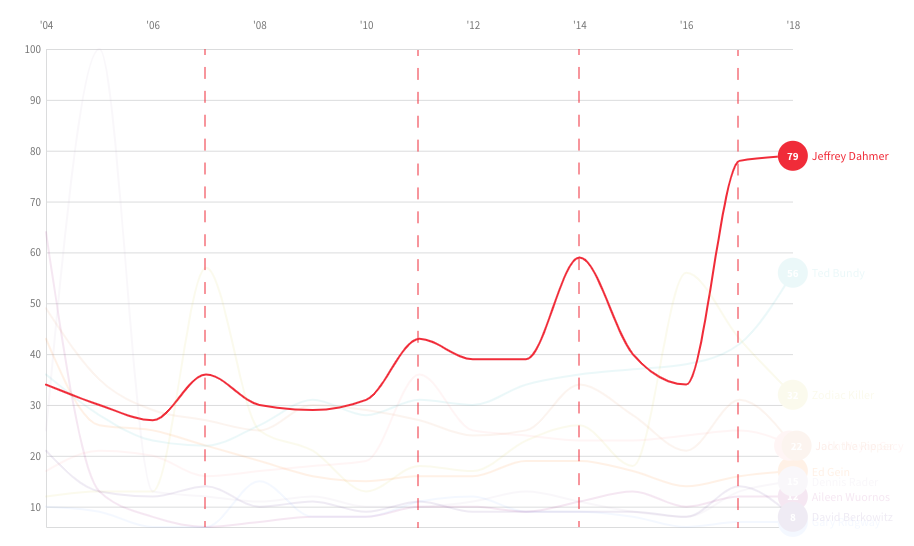
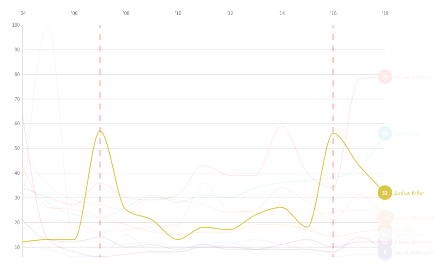
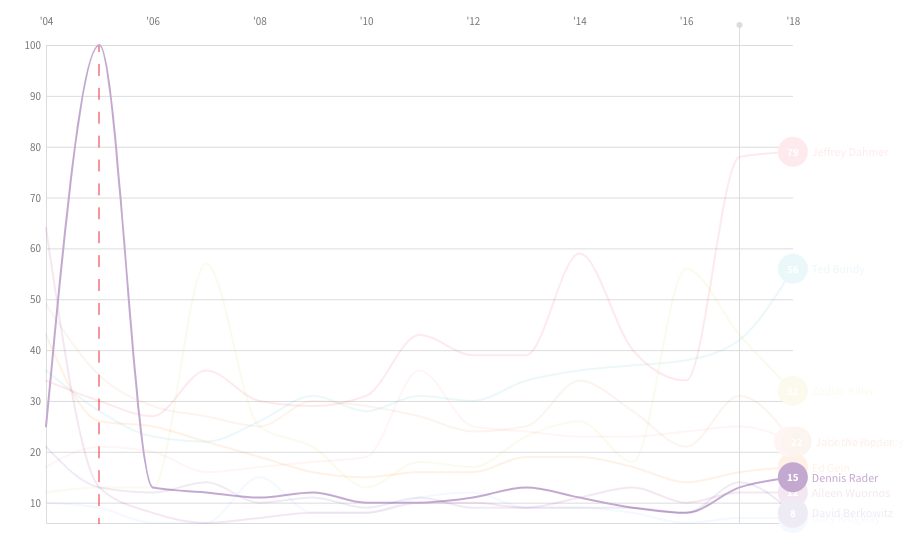

AMERICA'S SEARCH INTEREST IN SERIAL KILLERS
It seems anytime a major story on a new serial killer breaks, it re-opens America's curisotiy on past prolific killers. Just recently, the confession of 90 killings from Samuel Little, ignited an interest in serial killers like Ted Bundy and Jeffrey Dahmer.
MOST COMMON SEARCHES
Click on the name to read their stories
There have been numerous serial killers throughout the decades, but the top ten serial killers on this list were selected based on their consistent popularity throughout various web searches and lists. The criteria for the selected killers was to have a consistent search index, verified via Google Trends, and familiarity within the community. Meaning that I asked people I knew, randomly in conversation, whether they knew the killers on the list. Almost 99% of the individuals I approached, were familiar with Ted Bundy and Jeffrey Dahmer. Once the 'top 10' list was finalized, I took the average search interest from 2004 to 2018 for each killer and arranged them based on the average search interest result.
WHERE ARE THEY SEARCHED FOR?
Although Dahmer is the most commonly searched for serial killer in most of North America, each killer's popularity depends on where they were born, apprehended, where they lived, and/or where they committed their crimes:
Dahmer:Born in Milwaukee, Wisconsin, where he also killed 15 out of 16 of his victims
Bundy: Arrested in Salt Lake City, Utah for kidnapping 18 year old Carol DaRonch. Bundy was also accepted into the Univerity of Utah Law School.
Rader: Born in Pittsburg, Kansas, where he committed all of his crimes and was eventually apprehended.
Gein: Born in La Crosse County, Wisconsin, where he committed all of his crimes and was eventually apprehended.
Gacy: Born and Died in Chicago, Illinois. He committed all of his crimed in Cook County, Illinois.
Zodiac:
Ridgway: Ridgway, also known as the Green River Killer, for dumping most of his victims’ bodies in the Green River, a 65-mile long river in the state of Washington.
Jack The Ripper:
David Berkowitz: Born in Brooklyn, New York and committed all of his killings in New York City, where he was eventually apprehended.
SEARCH INTEREST SINCE 2004
Many of the peaks in search interest, from this chart, come from a movie, documentary, or book release. Ailen Wuornos' search interest spiked when we the biographical crime film "Monster" came out in 2003. Althought our data doesn't reflect that year, you can see the decline in 2004. In 2014, search interests for Jack the Ripper peaked when a book, titled "Naming Jack the Ripper", came out claiming to have solved the 126 year old mystery of the killer's identity. David Berkowitz recently gained a bit of interest in 2017, when the CBS News special, Son of Sam: The Killer Speaks", was released. This was Berkowitz' first interview in a decade. Below is a breakdown and explanation of the some of the more significant spikes in search interest throughout the years:
DAHMER
2007: A new report comes out with a theory that Dahmer killed Adam Walsh, a six year old boy that was abducted from a mall in Hollywood, Florida. Also known as the son of John Walsh, host of the popular crime-solving TV show, "America's Most Wanted".
2011: The man who escaped from Dahmer's home and ultimately led police to his capture, Tracy Edwards, is arrested and charged with homicide on July 26, 2011.
2014: Dahmer's childhood home, where he committed his first murder, goes on the market (priced at $295,000).
2017: The popular serial-killer TV drama, "Mindhunter", debutes on Netflix on October 13, 2017.
ZODIAC
2007: The movie "Zodiac", based on the 1986 non-fiction book, by the same name, about the mysterious killer, debuts on March 2, 2007.
2016: In March 2013, during the 2016 presidential election, a Twitter user tweets "Alert: Ted Cruz is speaking!! His speech is titled: 'This Is The Zodiac Speaking'". The tweet goes viral and the internet explodes with memes and parody pages of Ted Cruz, a republican presidential candidate, possibly being the Zodiac Killer.
RADER
2005: Rader is arrested on February 25, 2005, thirty-one years after killing his first set of victims.